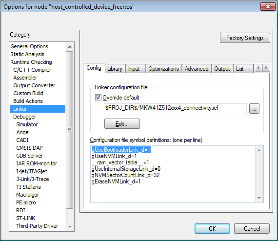

To build a Thread application in IAR® IDE, which is offset to load starting at second sector of the flash, thus making the binary compatible with the FSCI bootloader, ensure the IAR Project Options for the Linker configuration match the settings below.
To build a bootloader-compatible application, for the Host Controlled Device, start with the workspace in: \boards\frdmkw41z\wireless_examples\thread\host_controlled_device\freertos\iar and ensure gUseBootloaderLink_d is set to 1.
